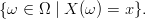
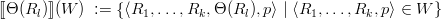
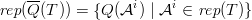
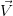
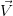
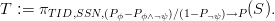

MayBMS: A Probabilistic Database System
User Manual
Copyright (c) 2005-2009
The MayBMS Development Group
Christoph Koch*, Dan Olteanu**, Lyublena Antova*, and Jiewen Huang*,**
*
Department of Computer Science, Cornell University, Ithaca, NY
**
Oxford University Computing Laboratory, Oxford, UK
Contents
Chapter 1
Introduction
1.1 What is MayBMS?
The MayBMS system (note: MayBMS is read as “maybe-MS”, like DBMS) is a
complete probabilistic database management system that leverages robust
relational database technology: MayBMS is an extension of the Postgres server
backend. MayBMS is open source and the source code is available under the BSD
license at
http://maybms.sourceforge.net
The MayBMS system has been under development since 2005. While the
development has been carried out in an academic environment, care has
been taken to build a robust, scalable system that can be reliably used in
real applications. The academic homepage of the MayBMS project is
at
http://www.cs.cornell.edu/database/maybms/
MayBMS stands alone as a complete probabilistic database management
system that supports a powerful, compositional query language for which
nevertheless worst-case efficiency and result quality guarantees can be made. We
are aware of several research prototype probabilistic database management
systems that are built as front-end applications of Postgres, but of no other fully
integrated and available system. The MayBMS backend is accessible through
several APIs, with efficient internal operators for computing and managing
probabilistic data.
In summary, MayBMS has the following features:
- Full support of all features of PostgreSQL 8.3.3, including unrestricted
query functionality, query optimization, APIs, updates, concurrency
control and recovery, etc.
- Essentially no performance loss on PostgreSQL 8.3.3 functionality:
After parsing a query or DML statement, a fast syntactic check is made
to decide whether the statement uses the extended functionality of
MayBMS. If it does not, the subsequently executed code is exactly that
of PostgreSQL 8.3.3.
- Support for efficiently creating and updating probabilistic databases,
i.e., uncertain databases in which degrees of belief can be associated
with uncertain data.
- A powerful query and update language for processing uncertain data
that gracefully extends SQL with a small number of well-designed
language constructs.
- State-of-the-art efficient techniques for exact and approximate
probabilistic inference.
1.2 Applications
Database systems for uncertain and probabilistic data promise to have many
applications. Query processing on uncertain data occurs in the contexts of data
warehousing, data integration, and of processing data extracted from
the Web. Data cleaning can be fruitfully approached as a problem of
reducing uncertainty in data and requires the management and processing of
large amounts of uncertain data. Decision support and diagnosis systems
employ hypothetical (what-if) queries. Scientific databases, which store
outcomes of scientific experiments, frequently contain uncertain data such as
incomplete observations or imprecise measurements. Sensor and RFID data is
inherently uncertain. Applications in the contexts of fighting crime or
terrorism, tracking moving objects, surveillance, and plagiarism detection
essentially rely on techniques for processing and managing large uncertain
datasets. Beyond that, many further potential applications of probabilistic
databases exist and will manifest themselves once such systems become
available.
The MayBMS distribution comes with a number of examples that illustrate its
use in these application domains. Some of these examples are described in the
tutorial chapter of this manual.
The experiments section at the end of this manual reports on some
performance experiments with MayBMS. Unfortunately, at the time of writing
this, no benchmark for probabilistic database systems exists, so these experiments
are necessarily somewhat ad-hoc.
1.3 Acknowledgments
Michaela Goetz, Thomas Jansen and Ali Baran Sari are alumni of the MayBMS
team. The MayBMS project was previously supported by German Science
Foundation (DFG) grant KO 3491/1-1 and by funding provided by the Center for
Bioinformatics (ZBI) at Saarland University, Saarbruecken, Germany. It is
currently supported by grant IIS-0812272 of the US National Science
Foundation.
Chapter 2
First Steps
2.1 Installing MayBMS
Using the installers
Installers for MayBMS are available for both Windows and Linux operating
systems and can be downloaded at
https://sourceforge.net/projects/maybms/
After you have obtained a copy of the installer, start it and follow the
instructions.
Compiling from scratch
If the prepackaged installers do not work for you you can download the
MayBMS’s source code and compile it. A copy is available for download
at
https://sourceforge.net/projects/maybms/
Alternatively, you can obtain the latest snapshot from the repository by
issuing the following command:
cvs -z3 -d:pserver:anonymous@maybms.cvs.sourceforge.net:/cvsroot/maybms
co -P maybms
(on a single line).
This creates a directory maybms/ with a subdirectory postgresql-8.3.3/ that
contains the source code of the system.
To compile and install MayBMS, just follow the instructions for installing
PostgreSQL 8.3.3. The latter is documented at
http://www.postgresql.org/docs/8.3/interactive/installation.html.
2.2 Running MayBMS
After you have installed MayBMS (in either of the described ways), you can set
up a database and start using it. Creating and accessing databases is the same as
in PostgreSQL 8.3.3. Follow the links
http://www.postgresql.org/docs/8.3/interactive/tutorial-createdb.html
and
http://www.postgresql.org/docs/8.3/interactive/tutorial-accessdb.html.
See next section for short instructions on how to run MayBMS.
2.3 Short Instructions
Alternatively, you can follow the following set of
instructions.
On most UNIX machines, Postgres is by default installed in the directory
/usr/local/pgsql/ and run under user “postgres”. MayBMS uses the same
defaults. If you prefer to install MayBMS in your home directory and run it
with your user privileges, you do not need root privileges to install it.
Proceed as follows: Change the path ac_default_prefix in line 279 of the file
maybms/postgresql-8.3.3/configure to a path into your home directory (e.g.
/home/myname/pgsql/ if your home directory is /home/myname/).
To compile, install, and start the Postgres server, execute the following
statements:
cd maybms/postgresql-8.3.3/
./configure
make
make install
cd
pgsql/bin/initdb -D mydbname
pgsql/bin/pg_cql start -D mydbname
Note: In these minimal instructions, we did not create a special database using
createdb (so the default, template1, has to be used), and error messages are
written to the console.
Now MayBMS is available for connections from applications.
For example, the Postgres command line interface psql in which you can issue
MayBMS queries and data manipulation language statements is started
with
psql template1
Now you can enter the examples from, e.g., the following tutorial. The psql
program is terminated using the command “\q”. The database server is stopped
with
pgsql/bin/pg_ctl stop -D mydbname
Remark
Since Postgres and MayBMS use the same process identifiers, MayBMS and
Postgres cannot run concurrently on the same machine. If you start Postgres when
MayBMS is already running (or vice versa), there will be an error message stating
that Postgres is already running. Since MayBMS always identifies itself
as Postgres, standard Postgres applications and middleware can run on
MayBMS.
Chapter 3
Probabilistic Databases
We first give an informal definition of probabilistic databases, followed by a formal
definition.
3.1 Informal Definition
Given a relational database schema (i.e., the structural information usually
specified by SQL CREATE TABLE statements). A probabilistic database is a
finite set of possible worlds, where each possible world has a weight greater than 0
but no greater than 1 such that the sum of the weights of all the worlds is one.
Each possible world is a relational database over the given schema. That is, the
schema is common to all possible worlds.
Possible worlds are a means of expressing uncertainty.
- In a frequentist interpretation, the probabilistic database represents the
possible outcomes of a random experiment, the outcomes of which are
relational databases (or can be conveniently represented as relational
databases). The probability weight of a possible world is (the limit of)
the relative frequency of that possible world occurring as outcome of
the random experiment over a large number of trials.
- In a Bayesian interpretation, one of the possible worlds is “true”, but
we do not know which one, and the probabilities represent degrees of
belief in the various possible worlds.
Note that these interpretations of probabilistic databases are completely
standard in probability theory (and formalized via the notion of probability
spaces). The only aspect particular to probabilistic databases is the fact that
possible worlds are relational databases.
Note that the idea of a probabilistic database as a set of possible worlds is only
the conceptual model. The physical representation of the set of possible worlds in
the MayBMS system is quite different (see Section 5.4) and allows for the efficient
and space-saving (compressed) representation of very large sets of possible
worlds.
3.2 Formal Definition
The following is a standard definition from probability theory and shall only be
recalled to demonstrate the close connection of probabilistic databases to classical
concepts in mathematics.
Definition 3.2.1 A finite probability space is a triple (Ω,, Pr) where
Formally, a probabilistic database over a relational database schema sch is a
finite probability space (Ω, = 2Ω, Pr) with an associated function I (for
instance) that maps each ω  Ω to a relational database over schema
sch.
Ω to a relational database over schema
sch.
We call the elements ω of Ω the possible worlds of the probabilistic
database.
We can identify events with Boolean queries Q that are true on a subset of Ω.
Of course, the probability of such an event is given by
One particular type of event is membership of a given tuple in the result of a
(nonboolean) query, i.e., an event
The probability of this event is called the tuple confidence for tuple  .
.
A random variable X is a function from Ω to a set D (the “values” of the
random variable). We can associate each expression X = x, where x D, with an
event

Again, this is the usual notion from probability theory.
3.3 An Example
Consider a finite probability space with
and Pr[ωrain,wet] = 0.35, Pr[ωrain,¬wet] = 0.05, Pr[ω¬rain,wet] = 0.1, and
Pr[ω¬rain,¬wet] = 0.5.
Let Wet be the event {ωrain,wet,ω¬rain,wet}. Then Pr[Wet] = 0.35 + 0.1 = 0.45.
We define Boolean random variables Wet and Rain as follows:
Then, Pr[Wet = true] is again 0.45.
The first example of the following tutorial chapter captures this example in the
framework of the MayBMS query and update language.
Chapter 4
Tutorial
This tutorial introduces the main features of MayBMS in an informal way. The
full examples can be run using the psql command line interface.
4.1 A Really Simple Example
We start by creating a simple table using SQL commands. The table encodes
that we see rain and wet ground with probability 0.4, no rain but wet
ground with probability 0.1, and no rain and dry ground with probability
0.5.
create table R (Dummy varchar, Weather varchar,
Ground varchar, P float);
insert into R values (’dummy’, ’rain’, ’wet’, 0.35);
insert into R values (’dummy’, ’rain’, ’dry’, 0.05);
insert into R values (’dummy’, ’no rain’, ’wet’, 0.1);
insert into R values (’dummy’, ’no rain’, ’dry’, 0.5);
select * from R;
dummy | weather | ground | p
-------+---------+--------+------
dummy | rain | wet | 0.35
dummy | rain | dry | 0.05
dummy | no rain | wet | 0.1
dummy | no rain | dry | 0.5
(4 rows)
Table R is a completely standard relational database table, created using
standard SQL statement. One of the columns, P, stores probabilities, but to
the system these are only numbers without any particular meaning so
far.
The following statement creates a probabilistic database table S:
create table S as
repair key Dummy in R weight by P;
The repair-key statement is one of the extensions of the MayBMS query
language over standard SQL, and it associates a special meaning to the values
taken from the “weight by” column.
The statement creates a probability space with a sample space consisting of
three possible databases – each one consisting just of one tuple from R – with an
associated probability measure given by the P column.
There are at least two natural interpretations of this example, one using
random variables and one using a possible worlds semantics.
- We can think of S as a table specifying the joint probability distribution
of two discrete random variables Weather (with values “rain” and “no
rain”) and Ground (with values “wet” and “dry”).
- Alternatively, there are three possible worlds. Each of these worlds is a
relation S with a single tuple from R. The probability of such a world
is the value given for the tuple in column P of R.
We can compute the probabilities Pr[Ground=’wet’] and Pr[Weather=’rain’
and Ground=’wet’] as follows using the MayBMS conf() aggregate (which stands
for “confidence”).
create table Wet as
select conf() as P from S where Ground = ’wet’;
select * from Wet;
p
------
0.45
(1 row)
create table Rain_and_Wet as
select conf() as P from S
where Weather = ’rain’ and Ground = ’wet’;
select * from Rain_and_Wet;
p
------
0.35
(1 row)
The conditional probability Pr[Weather=’rain’ | Ground=’wet’] can be
computed as the ratio
select R1.P/R2.P as Rain_if_Wet from Rain_and_Wet R1, Wet R2;
rain_if_wet
-------------
0.777777778
(1 row)
Since conf() is an aggregate, we can compute the marginal probability table for
random variable Ground as
select Ground, conf() from S group by Ground;
ground | conf
--------+------
dry | 0.55
wet | 0.45
(2 rows)
4.2 Example: Triangles in Random Graphs
In this tutorial, we compute the probability that a triangle occurs in a random
graph with k named (and thus distinguishable) nodes. That is, we ask for the
probability that an undirected graph, chosen uniformly at random among the
graphs of k nodes, contains at least one triangle. This is equivalent to
computing the count n of graphs that contain a triangle among the 2k⋅(k-1)∕2
undirected graphs of k distinguished nodes. Indeed, an undirected graph of
k nodes has at most k ⋅ (k - 1)∕2 edges, and we obtain all the graphs
over the given k nodes by considering all subsets of this maximal set of
edges.
We start by creating a unary “node” relation, say with five nodes. We do this
with the standard SQL “create table” and “insert” commands, which behave as
usual in a relational database system.
create table node (n integer);
insert into node values (1);
insert into node values (2);
insert into node values (3);
insert into node values (4);
insert into node values (5);
Next we create the total order over the nodes, i.e., a binary relation with
exactly one edge between any two nodes. This is again a standard SQL “create
table” statement where we compute the tuples to be inserted with a standard
SQL query over the “node” relation.
create table total_order as
(
select n1.n as u, n2.n as v
from node n1, node n2
where n1.n < n2.n
);
We create a table to represent that each edge is either in the graph (bit=1) or
missing (bit=0).
create table inout (bit integer);
insert into inout values (1);
insert into inout values (0);
The following operation introduces uncertainty into the database and creates a
probabilistic database with 25⋅4∕2 = 1024 possible worlds, one for each possible
edge relation over the five nodes (=subset of the total order). We do this
by a query operation “repair key” that for each edge of the total order
nondeterministically chooses whether the edge is in the graph (bit=1) or
not. (That is, since we do not indicate at what probability either of the
two alternatives for bit is to be chosen, the system makes the decision
uniformly at random, choosing bit=1 with probability 0.5.) The resulting
probabilistic database represents all the alternative edge relations as possible
worlds.
create table to_subset as
(
repair key u,v in (select * from total_order, inout)
);
The “repair key” operation is the most difficult to understand and
at the same time the most interesting addition to SQL that MayBMS
provides. Conceptually, “repair key” takes a set of attributes and a
relation R (in this case the relational product of total_order and inout) as
arguments and nondeterministically chooses a maximal repair of key  in R, that is, it removes a minimal set of tuples from R such that
in R, that is, it removes a minimal set of tuples from R such that  ceases to violate a key constraint on columns u,v. In this case, there
are exactly two tuples for each pair (u,v), namely (u,v, 1) and (u,v, 0),
and repair key chooses exactly one of them. The consequence is that,
overall, the operation nondeterministically chooses a subset of the set
of all edges. It chooses from these subsets uniformly. The “repair key”
operation accepts an additional argument that allows us to assign nonuniform
probabilities to the possible choices, but in this case we do want uniform
probabilities.
ceases to violate a key constraint on columns u,v. In this case, there
are exactly two tuples for each pair (u,v), namely (u,v, 1) and (u,v, 0),
and repair key chooses exactly one of them. The consequence is that,
overall, the operation nondeterministically chooses a subset of the set
of all edges. It chooses from these subsets uniformly. The “repair key”
operation accepts an additional argument that allows us to assign nonuniform
probabilities to the possible choices, but in this case we do want uniform
probabilities.
We have now created a probabilistic database. Conceptually, queries and
updates are evaluated in all possible worlds in parallel. Viewed differently, there is
only one to_subset relation (but we do not know which one), and we continue to
run queries and updates on this uncertain relation.
To actually create the edge relation, we select those tuples that have bit=1
and compute their symmetric closure (to really represent an undirected
graph).
create table edge0 as (select u,v from to_subset where bit=1);
create table edge as (select * from edge0);
insert into edge (select v as u, u as v from edge0);
Now we can compute the probability that the chosen graph has a triangle
as
select conf() as triangle_prob
from edge e1, edge e2, edge e3
where e1.v = e2.u and e2.v = e3.u and e3.v=e1.u
and e1.u <> e2.u and e1.u <> e3.u and e2.u <> e3.u;
where the conf aggregate computes the probability (“confidence”) that the query
given by the from-where statement returns a nonempty result. This results
in
triangle_prob
---------------
0.623355
(1 row)
This is the correct probability: out of the 1024 possible graphs of five nodes,
636 have a triangle, and 636∕1024 ≈ .623355. Indeed, the query
select *
from edge e1, edge e2, edge e3
where e1.v = e2.u and e2.v = e3.u and e3.v=e1.u
and e1.u <> e2.u and e1.u <> e3.u and e2.u <> e3.u;
computes at least one tuple in exactly those possible worlds (=on those
graphs) that have a triangle. The conf() aggregate applied to this query
conceptually computes the sum of the probability weights of the worlds
in which the query has a nonempty result. (The actual implementation
does not naively iterate over possible worlds, because this would be very
inefficient.)
A more efficient implementation of the same query starts from the “edge0”
relation:
select conf() as triangle_prob
from edge0 e1, edge0 e2, edge0 e3
where e1.v = e2.u and e2.v = e3.v and e1.u = e3.u
and e1.u < e2.u and e2.u < e3.v;
Finally, an even more efficient implementation uses the aconf(ϵ,δ) aggregate to
compute an (ϵ,δ)-approximation of the probability, i.e., the probability that the
computed value returned by aconf deviates from the correct probability p by
more than ϵ ⋅ p is less than δ.
select aconf(.05,.05) as triangle_prob
from edge0 e1, edge0 e2, edge0 e3
where e1.v = e2.u and e2.v = e3.v and e1.u = e3.u
and e1.u < e2.u and e2.u < e3.v;
This result may be somewhat off, but the probability that the error is greater
than 5% is less than 5%.
Note that in the example we have seen only two extensions of SQL, “repair
key” and “[a]conf”. The good news is that this is essentially all there is.
SQL extended by just these two features allows for very powerful queries,
including the computation of conditional probability tables, maximum
likelihood estimates, maximum-a-posteriori, Bayesian learning, and much
more.
4.3 Example: Skills Management
The following example demonstrates that probabilistic databases can be useful
even if the input data is not uncertain and the desired result is a classical
relational table. We define a hypothetical query in the context of skills
management. Assume we are given a classical relational database with two tables,
one, CE, stores possible takeover targets – companies that we might decide to buy
with the employees that work in these companies. The second table, ES, stores
each employee’s skills.
Here is an example database. We can build this database in MayBMS with the
standard SQL “create table” and “insert” statements.
Now suppose that we want to buy exactly one of those companies, and we
expect exactly one employee to leave as a result of the takeover. Which skills can
we gain for certain?
We express this query in two steps. First we randomly choose a company to
buy and an employee who leaves, and compute the remaining employees in
the chosen company. We obtain this uncertain table using the following
query:
create table RemainingEmployees as
select CE.cid, CE.eid
from CE,
(repair key dummy
in (select 1 as dummy, * from CE)) Choice
where CE.cid = Choice.cid
and CE.eid <> Choice.eid;
Note that the probabilistic database thus created contains five possible worlds
(since there are five tuples in CE), with a uniform probability distribution.
Not all these worlds have the same number of tuples: If we chose Google
and Bob, the world contains one tuple, Google and Joe. If we choose
Yahoo and Dan, the world contains two tuples, (Yahoo, Bill) and (Yahoo,
Fred).
Now we compute which skills we gain for certain:
create table SkillGained as
select Q1.cid, Q1.skill, p1, p2, p1/p2 as p
from (select R.cid, ES.skill, conf() as p1
from RemainingEmployees R, ES
where R.eid = ES.eid
group by R.cid, ES.skill) Q1,
(select cid, conf() as p2
from RemainingEmployees
group by cid) Q2
where Q1.cid = Q2.cid;
select cid, skill from SkillGained where p=1;
The result is the table
| CID | Skill |
|
|
| Google | Web |
| Yahoo | Java |
| |
indicating that if we buy Google, we gain the skill “Web” for certain, and if we buy
Yahoo, we gain the skill “Java” for certain.
It is worth looking at the auxiliary table SkillGained:
| SkillGained | CID | Skill | p1 | p2 | p |
|
|
|
|
|
|
| | Google | Web | 2/5 | 2/5 | 1 |
| | Yahoo | Java | 3/5 | 3/5 | 1 |
| | Yahoo | Web | 2/5 | 3/5 | 2/3 |
| | Yahoo | Search | 2/5 | 3/5 | 2/3 |
| |
This table consists of the tuples (x,y,p1,p2,p) such that
- x is a company,
- y is a skill,
- p1 is the probability that the chosen company is x and the skill y is
gained (e.g., for x=Yahoo and y=Web, this is true in two of the five
possible worlds),
- p2 is the probability that x is the chosen company (e.g., for x=Yahoo,
this is true in three of the five possible worlds), and
- p = p1∕p2 is the probability that skill y is gained if company x is bought
(e.g., for x=Yahoo and y=Web, the probability is 2/3: of the three
possible worlds in which Yahoo was bought, only two worlds guarantee
that the skill Web is gained).
Thus, indeed, if we select those tuples of SkillGained for which p = 1, we
obtain the desired pairs of companies and skills – those skills that we obtain for
certain if we buy a company.
4.4 Data Cleaning
The following example is in the domain of data cleaning. Consider a census in
which a number of individuals complete forms, that are subsequently digitized
using an OCR system that will in some cases indicate a number of alternative
readings, together with probabilities. For simplicity, let us assume that the forms
only ask for a social security number (SSN).
For example, if two individuals complete their forms and the OCR system
recognizes the SSN of the first to be either 185 (with probability .4) or
785 and the SSN of the second to be either 185 (with probability .7) or
186, we store this information in a probabilistic database constructed as
follows:
create table Census_SSN_0 (tid integer, ssn integer, p float);
insert into Census_SSN_0 values (1, 185, .4);
insert into Census_SSN_0 values (1, 785, .6);
insert into Census_SSN_0 values (2, 185, .7);
insert into Census_SSN_0 values (2, 186, .3);
create table Census_SSN as
repair key tid in Census_SSN_0 weight by p;
We can view the alternatives and their probability weights by the following
query:
select tid, ssn, conf() as prior
from Census_SSN
group by tid, ssn;
tid | ssn | prior
-----+-----+-------
1 | 185 | 0.4
1 | 785 | 0.6
2 | 185 | 0.7
2 | 186 | 0.3
We can determine the probability that at least one individual has any
particular SSN (assuming that the OCR system did not miss the correct SSN as
an alternative) using the following query:
select ssn, conf() as ssn_prior
from Census_SSN
group by ssn;
ssn | ssn_prior
-----+-----------
185 | 0.82
186 | 0.3
785 | 0.6
Indeed, the probability that at least one individual has SSN 185 is
1 - .6 ⋅ .3 = .82.
We now perform data cleaning using a single integrity constraint, namely that
no two individuals can have the same ssn. Conceptually, we want to exclude
worlds that violate the functional dependency
i.e., the constraint that ssn must be a key for the relation.
We start by computing an auxiliary relation that computes, in each possible
worlds, the ssn values that violate the integrity constraint.
/* violations of fd ssn->tid */
create table FD_Violations as
select S1.ssn
from Census_SSN S1, Census_SSN S2
where S1.tid < S2.tid and S1.ssn = S2.ssn;
Note that two tuples violate the constraint if they have the same ssn but different
tid. We express this in the above query using a slightly changed condition: (S1.tid
< S2.tid and S1.ssn = S2.ssn) instead of (S1.tid <> S2.tid and S1.ssn = S2.ssn).
However, both conditions select the same set of distinct ssn values that violate the
integrity constraint.
This query computes the uncertain table that holds 185 in the world in which
both forms have ssn value 185. In all other worlds it is empty.
Next we compute the conditional probability table
create table TidSSNPosterior as
select Q1.tid, Q1.ssn, p1, p2, p3,
cast((p1-p2)/(1-p3) as real) as posterior
from
(
select tid, ssn, conf() as p1
from Census_SSN
group by tid, ssn
) Q1,
(
(
select ssn, conf() as p2
from FD_Violations
group by ssn
)
union
(
(select ssn, 0 as p2 from Census_SSN_0)
except
(select possible ssn, 0 as p2 from FD_Violations)
)
) Q2,
(
select conf() as p3
from FD_Violations
) Q3
where Q1.ssn = Q2.ssn;
select * from TidSSNPosterior;
tid | ssn | p1 | p2 | p3 | posterior
-----+-----+-----+------+------+-----------
1 | 185 | 0.4 | 0.28 | 0.28 | 0.166667
1 | 785 | 0.6 | 0 | 0.28 | 0.833333
2 | 185 | 0.7 | 0.28 | 0.28 | 0.583333
2 | 186 | 0.3 | 0 | 0.28 | 0.416667
This table stores, for each pair of form tid and ssn, the posterior probability
that the individual who completed the form tid has the social security number ssn
given that no two individuals can have the same ssn.
We can compute, for each form, the maximum-a-posteriori ssn (the
most likely ssn given the evidence specified by the integrity constraint)
as
select tid, argmax(ssn, posterior) as map
from TidSSNPosterior
group by tid
order by tid;
tid | map
-----+-----
1 | 785
2 | 185
In a sense, these map values are the locally best values that we could decide
upon for each uncertain answer in our census database. Note, however, that, if we
always choose the map value, we may sometimes create a database that again
violates the integrity constraints used for data cleaning. This would have been the
case if we had indicated probability .9 for both 185 alternatives in the input
database.
A further example that computes conditional probabilities and MAP values in
a different context can be found in Chapter 6.1 (Example 6.1.1).
Chapter 5
Formal Foundations
This chapter describes the formal foundations of MayBMS, including the
principles used for representing and storing probabilistic data, the design of the
query language, and efficient algorithms for query processing.
It is safe for a reader who has gained sufficient intuitive understanding of
the workings of MayBMS from the tutorial to skip this chapter on first
reading and to directly proceed to the query language reference chapter that
follows.
5.1 Probabilistic Databases: Notation
Given a schema with relation names R1,…,Rk. We use sch(Rl) to denote the
attributes of relation schema Rl. Formally, a probabilistic database is a finite set of
structures
![W = {⟨R11,...,R1k,p[1]⟩,...,⟨Rn1,...,Rnk ,p[n]⟩}](manual16x.png)
of relations R1i,…,R
ki and numbers 0 < p[i] ≤ 1 such that
We call an element ⟨R1i,…,R
ki,p[i]⟩ W a possible world, and p[i] its probability.
We use superscripts for indexing possible worlds. To avoid confusion with
exponentiation, we sometimes use bracketed superscripts ⋅[i]. We call a relation R
complete or certain if its instantiations are the same in all possible worlds of W,
i.e., if R1 =  = Rn.
= Rn.
Tuple confidence refers to the probability of the event  R, where R is one of
the relation names of the schema, with
R, where R is one of
the relation names of the schema, with
5.2 Query Language Desiderata
At the time of writing this, there is no accepted standard query language for
probabilistic databases. In fact, we do not even agree today what use cases and
functionality such systems should support. It seems to be proper to start the
query language discussion with the definition of design desiderata. The following
are those used in the design of MayBMS.
- Efficient query evaluation.
- The right degree of expressive power. The language should be powerful
enough to support important queries. On the other hand, it should not
be too strong, because expressiveness generally comes at a price: high
evaluation complexity and infeasibility of query optimization.
- Genericity. The semantics of a query language should be independent
from details of how the data is represented. Queries should behave in
the same way no matter how the probabilistic data is stored. This is
a basic requirement that is even part of the traditional definition of
what constitutes a query (cf. e.g. [1]), but it is nontrivial to achieve
for probabilistic databases [4].
- The ability to transform data. Queries on probabilistic databases are
often interpreted quite narrowly in the literature. It is the authors’
view that queries in general should be compositional mappings between
databases, in this case probabilistic databases. This is a property taken
for granted in relational databases. It allows for the definition of clean
database update languages.
- The ability to introduce additional uncertainty. This may appear to
be a controversial goal, since uncertainty is commonly considered
undesirable, and probabilistic databases are there to deal with it by
providing useful functionality despite uncertainty. However, it can be
argued that an uncertainty-introduction operation is important for at
least three reasons: (1) for compositionality, and to allow construction
of an uncertain database from scratch (as part of the update language);
(2) to support what-if queries; and (3) to extend the hypothesis
space modeled by the probabilistic database. The latter is needed to
accommodate the results of experiments or new evidence, and to define
queries that map from prior to posterior probabilistic databases. This
is a nontrivial issue, and will be discussed in more detail later.
The next section introduces a query algebra and argues that it satisfies each of
these desiderata.
5.3 The Algebra
This section covers the core query algebra of MayBMS: probabilistic world-set
algebra (probabilistic WSA) [4, 13, 12]. Informally, probabilistic world-set algebra
consists of the operations of relational algebra, an operation for computing tuple
confidence conf, and the repair-key operation for introducing uncertainty. The
operations of relational algebra are evaluated individually, in “parallel”, in each
possible world. The operation conf(R) computes, for each tuple that occurs in
relation R in at least one world, the sum of the probabilities of the worlds in
which the tuple occurs. The result is a certain relation, or viewed differently, a
relation that is the same in all possible worlds. Finally, repair-key@P (R), where
 ,P are attributes of R, conceptually nondeterministically chooses a maximal
repair of key
,P are attributes of R, conceptually nondeterministically chooses a maximal
repair of key  . This operation turns a possible world Ri into the set of
worlds consisting of all possible maximal repairs of key
. This operation turns a possible world Ri into the set of
worlds consisting of all possible maximal repairs of key  . A repair of
key in relation Ri is a subset of Ri for which
. A repair of
key in relation Ri is a subset of Ri for which  is a key. It uses the
numerically-valued column P for weighting the newly created alternative
repairs.
is a key. It uses the
numerically-valued column P for weighting the newly created alternative
repairs.
Formally, probabilistic world-set algebra consists of the following operations:
- The operations of relational algebra (selection σ, projection π, product
×, union ∪, difference -, and attribute renaming ρ), which are applied
in each possible world independently.
The semantics of operations Θ on probabilistic database W is

for unary operations (1 ≤ l ≤ k). For binary operations, the semantics
is
Selection conditions are Boolean combinations of atomic conditions
(i.e., negation is permitted even in the positive fragment of the algebra).
Arithmetic expressions may occur in atomic conditions and in the
arguments of π and ρ. For example, ρA+B→C(R) in each world adds
up the A and B values of each tuple of R and keeps them in a new C
attribute.
- An operation for computing tuple confidence,
where, w.l.o.g., P ⁄ sch(Rl), and
with schema sch(S) = sch(Rl) ∪{P}. The result of conf(Rl), the
relation S, is the same in all possible worlds, i.e., it is a certain relation.
By our definition of probabilistic databases, each possible world has
nonzero probability. As a consequence, conf does not return tuples with
probability 0.
For example, on probabilistic database
| p[1] = .3 | p[2] = .2 | p[3] = .5 |
conf(R) computes, for each possible tuple, the sum of the weights of the
possible worlds in which it occurs, here
|
|
|
|
| conf(R) | A | B | P |
|
|
|
|
| | a | b | .5 |
| | a | c | .5 |
| | b | c | .3 |
| | c | d | .7 |
| |
- An uncertainty-introducing operation, repair-key, which can be
thought of as sampling a maximum repair of a key for a relation.
Repairing a key of a complete relation R means to compute, as
possible worlds, all subset-maximal relations obtainable from R
by removing tuples such that a key constraint is satisfied. We will
use this as a method for constructing probabilistic databases, with
probabilities derived from relative weights attached to the tuples of
R.
We say that relation R′ is a maximal repair of a functional dependency (fd,
cf. [1]) for relation R if R′ is a maximal subset of R which satisfies that
functional dependency, i.e., a subset R′⊆ R that satisfies the fd such
that there is no relation R′′ with R′⊂ R′′⊆ R that satisfies the
fd.
Let  ,B sch(Rl). For each possible world ⟨R1,…,Rk,p⟩ W, let column
B of R contain only numerical values greater than 0 and let Rl satisfy the fd
(sch(Rl) - B) → sch(Rl). Then,
,B sch(Rl). For each possible world ⟨R1,…,Rk,p⟩ W, let column
B of R contain only numerical values greater than 0 and let Rl satisfy the fd
(sch(Rl) - B) → sch(Rl). Then,
Such a repair operation, apart from its usefulness for the purpose implicit in
its name, is a powerful way of constructing probabilistic databases from
complete relations.
Example 5.3.1 Consider the example of tossing a biased coin twice. We
start with a certain database
|
|
|
|
| R | Toss | Face | FProb |
|
|
|
|
| | 1 | H | .4 |
| | 1 | T | .6 |
| | 2 | H | .4 |
| | 2 | T | .6 |
| |
p = 1
that represents the possible outcomes of tossing the coin twice. We turn
this into a probabilistic database that represents this information
using alternative possible worlds for the four outcomes using the
query S := repair-keyToss@FProb(R). The resulting possible worlds
are
with probabilities p[1] = p ⋅ ⋅ = .16, p[2] = p[3] = .24, and p[4] = .36.
□
= .16, p[2] = p[3] = .24, and p[4] = .36.
□
The fragment of probabilistic WSA which excludes the difference operation is
called positive probabilistic WSA.
Computing possible and certain tuples is redundant with conf:
Example 5.3.2 A bag of coins contains two fair coins and one
double-headed coin. We take one coin out of the bag but do not look at its
two faces to determine its type (fair or double-headed) for certain. Instead
we toss the coin twice to collect evidence about its type.
We start out with a complete database (i.e., a relational database, or a
probabilistic database with one possible world of probability 1) consisting of three
relations, Coins, Faces, and Tosses (see Figure 5.1 for all tables used in this
example). We first pick a coin from the bag and model that the coin
be either fair or double-headed. In probabilistic WSA this is expressed
as
This results in a probabilistic database of two possible worlds,
The possible outcomes of tossing the coin twice can be modeled as
This turns the two possible worlds into five, since there are four possible
outcomes of tossing the fair coin twice, and only one for the double-headed
coin.
Let T := πToss,Face(S). The posterior probability that a coin of type x was
picked, given the evidence Ev (see Figure 5.1) that both tosses result in H,
is
Let A be a relational algebra expression for the Boolean query T = Ev. Then we
can compute a table of pairs ⟨x, Pr[x R∣T = Ev]⟩ as
The prior probability that the chosen coin was fair was 2/3; after taking
the evidence from two coin tosses into account, the posterior probability
Pr[the coin is fair | both tosses result in H] is only 1/3. Given the evidence
from the coin tosses, the coin is now more likely to be double-headed.
□
Example 5.3.3 We redefine the query of Example 5.3.2 such that
repair-key is only applied to certain relations. Starting from the database
obtained by computing R, with its two possible worlds, we perform the query
S0 := repair-keyType,Toss@FProb(Faces×Tosses) to model the possible outcomes
of tossing the chosen coin twice. The probabilistic database representing
these repairs consists of eight possible worlds, with the two possible R
relations of Example 5.3.2 and, independently, four possible S0 relations. Let
S := RS0. While we now have eight possible worlds rather than five, the
four worlds in which the double-headed coin was picked all agree on S with
the one world in which the double-headed coin was picked in Example 5.3.2,
and the sum of their probabilities is the same as the probability of that
world. It follows that the new definition of S is equivalent to the one of
Example 5.3.2 and the rest of the query is the same. □
Discussion
The repair-key operation admits an interesting class of queries: Like
in Example 5.3.2, we can start with a probabilistic database of prior
probabilities, add further evidence (in Example 5.3.2, the result of the coin
tosses) and then compute interesting posterior probabilities. The adding of
further evidence may require extending the hypothesis space first. For
this, the repair-key operation is essential. Even though our goal is not to
update the database, we have to be able to introduce uncertainty just to be
able to model new evidence – say, experimental data. Many natural and
important probabilistic database queries cannot be expressed without
the repair-key operation. The coin tossing example was admittedly a
toy example (though hopefully easy to understand). Real applications
such as diagnosis or processing scientific data involve technically similar
questions.
Regarding our desiderata, it is quite straightforward to see that probabilistic
WSA is generic (3): see also the proof for the non-probabilistic language in [4]. It
is clearly a data transformation query language (4) that supports powerful queries
for defining databases. The repair-key operation is our construct for uncertainty
introduction (5). The evaluation efficiency (1) of probabilistic WSA is
studied in Section 5.5. Expressiveness (2) is best demonstrated by the
ability of a language to satisfy many relevant use cases. While there are no
agreed upon expressiveness benchmarks for probabilistic databases yet, this
manual provides numerous examples that are closely related to natural use
cases.
5.4 Representing Probabilistic Data
This section discusses the method used for representing and storing probabilistic
data and correlations in MayBMS. We start by motivating the problem of finding
a practical representation system.
Example 5.4.1 Consider a census scenario, in which a large number of
individuals manually fill in forms. The data in these forms subsequently has
to be put into a database, but no matter whether this is done automatically
using OCR or by hand, some uncertainty may remain about the correct
values for some of the answers. Below are two simple filled in forms. Each one
contains the social security number, name, and marital status of one person.
The first person, Smith, seems to have checked marital status “single” after
first mistakenly checking “married”, but it could also be the opposite. The second
person, Brown, did not answer the marital status question. The social security
numbers also have several possible readings. Smith’s could be 185 or 785
(depending on whether Smith originally is from the US or from Europe) and
Brown’s may either be 185 or 186.
In an SQL database, uncertainty can be managed using null values, using a
table
|
|
|
|
| (TID) | SSN | N | M |
|
|
|
|
| t1 | null | Smith | null |
| t2 | null | Brown | null |
| |
Using nulls, information is lost about the values considered possible for the
various fields. Moreover, it is not possible to express correlations such as
that, while social security numbers may be uncertain, no two distinct
individuals can have the same. In this example, we can exclude the case
that both Smith and Brown have social security number 185. Finally,
we cannot store probabilities for the various alternative possible worlds.
□
This leads to three natural desiderata for a representation system: (*)
Expressiveness, that is, the power to represent all (relevant) probabilistic
databases, (*) succinctness, that is, space-efficient storage of the uncertain data,
and (*) efficient real-world query processing.
Often there are many rather (but not quite) independent local alternatives in
probabilistic data, which multiply up to a very large number of possible worlds.
For example, the US census consists of many dozens of questions for about 300
million individuals. Suppose forms are digitized using OCR and the resulting data
contains just two possible readings for 0.1% of the answers before cleaning. Then,
there are on the order of 210,000,000 possible worlds, and each one will
take close to one Terabyte of data to store. Clearly, we need a way of
representing this data that is much better than a naive enumeration of possible
worlds.
Also, the repair-key operator of probabilistic world-set algebra in general
causes an exponential increase in the number of possible worlds.
There is a trade-off between succinctness on one hand and efficient processing
on the other. Computing confidence conf(Q) of conjunctive queries Q on
tuple-independent databases is #P-hard – one such hard query [6] (in datalog
notation [1]) is
At the same time, much more expressive queries can be evaluated efficiently on
nonsuccinct representations (enumerations of possible worlds) [4]. Query
evaluation in probabilistic databases is not hard because of the presence of
probabilities, but because of the succinct storage of alternative possible worlds!
We can still have the goal of doing well in practice.
Conditional tables
MayBMS uses a purely relational representation system for probabilistic
databases called U-relational databases, which is based on probabilistic versions of
the classical conditional tables (c-tables) of the database literature [9]. Conditional
tables are a relational representation system based on the notion of labeled
null values or variables, that is, null values that have a name. The name
makes it possible to use the same variable x in several fields of a database,
indicating that the value of x is unknown but must be the same in all
those fields in which x occurs. Tables with variables are also known as
v-tables.
Formally, c-tables are v-tables extended by a column for holding a
local condition. That is, each tuple of a c-table has a Boolean condition
constructed using “and”, “or”, and “not” from atomic conditions of the
form x = c or x = y, where c are constants and x and y are variables.
Possible worlds are determined by functions θ that map each variable that
occurs in at least one of the tuples or local conditions in the c-tables
of the database to a constant. The database in that possible world is
obtained by (1) selecting those tuples whose local condition ϕ satisfies the
variable assignment θ, i.e., that becomes true if each variable x in ϕ is
replaced by θ(x), (2) replacing all variables y in the value fields of these
tuples by θ(y), and (3) projecting away the local condition column. For
example, the following c-table represents the possible worlds for the census
forms:
|
|
|
|
|
| R | SSN | N | M | cond |
|
|
|
|
|
| | 185 | Smith | y | x = 1 |
| | 785 | Smith | y | x = 2 |
| | 785 | Smith | y | x = 3 |
| | 186 | Brown | z | x = 1 |
| | 185 | Brown | z | x = 2 |
| | 186 | Brown | z | x = 3 |
| |
The variables y and z have domains {1, 2} and {1, 2, 3, 4}, respectively and
encode the marital statuses of the two persons, and variable x with domain
{1, 2, 3} is used to encode the uniqueness of the social security constraint. Indeed,
under any valuation θ the tuples having social security status of 185 do not have
their local conditions satisfied at the same time.
Conditional tables are sometimes defined to include a notion of global
condition, which we do not use: We want each probabilistic database to
have at least one possible world. We can encode the same information as
above using the following c-table with global condition Φ = (u≠v), where
u : dom(u) = {185, 785},v : dom(v) = {185, 186} are the variables holding the
social security numbers:
|
|
|
|
|
| R | SSN | N | M | cond |
|
|
|
|
|
| | u | Smith | y | true |
| | v | Brown | z | true |
| |
Conditional tables are a so-called strong representation system: They are
closed under the application of relational algebra queries. The set of worlds
obtained by evaluating a relational algebra query in each possible world
represented by a conditional table can again be straightforwardly represented by a
conditional table. Moreover, the local conditions are in a sense the most natural
and simple formalism possible to represent the result of queries on data with
labeled nulls.
U-Relational Databases
In our model, probabilistic databases are finite sets of possible worlds with
probability weights. It follows that each variable naturally has a finite domain, the
set of values it can take across all possible worlds. This has several consequences.
First, variables can be considered finite random variables. Second, only allowing
for variables to occur in local conditions, but not in attribute fields of the tuples,
means no restriction of expressiveness. Moreover, we may assume without loss of
generality that each atomic condition is of the form x = c (i.e., we never have to
compare variables).
If we start with a c-table in which each local condition is a conjunction of no
more than k atomic conditions, then a positive relational algebra query on this
uncertain database will result in a c-table in which each local condition is a
conjunction of no more than k′ atoms, where k′ only depends on k and the query,
but not on the data. If k is small, it is reasonable to actually hard-wire it in the
schema, and represent local conditions by k pairs of columns to store atoms of the
form x = c.
These are the main ideas of our representation system, U-relations. Random
variables are assumed independent in the current MayBMS system, but as we will
see, this means no restriction of generality. Nevertheless, it is one goal of future
work to support graphical models for representing more correlated joint
probability distributions below our U-relations. This would allow us to represent
learned distributions in the form of e.g. Bayesian networks directly in the system
(without the need to map them to local conditions) and run queries on top,
representing the inferred correlations using local conditions. The latter seem to be
better suited for representing the incremental correlations constructed by
queries.
One further idea employed in U-relational databases is to use vertical
partitioning for representing attribute-level uncertainty, i.e., to allow to decompose
tuples in case several fields of a tuple are independently uncertain.
Example 5.4.2 The following set of tables is a U-relational database
representation for the census data scenario of Example 5.4.1, extended by suitable
probabilities for the various alternative values the fields can take (represented by
table W).
|
|
|
|
| | UR[SSN] | V | D | TID | SSN |
|
|
|
|
| | | x | 1 | t1 | 185 |
| | x | 2 | t1 | 785 |
| | y | 1 | t2 | 185 |
| | y | 2 | t2 | 186 |
| |
|
| |
|
|
|
|
| | UR[M] | V | D | TID | M |
|
|
|
|
| | | v | 1 | t1 | 1 |
| | v | 2 | t1 | 2 |
| | w | 1 | t2 | 1 |
| | w | 2 | t2 | 2 |
| | w | 3 | t2 | 3 |
| | w | 4 | t2 | 4 |
| |
|
|
|
| | UR[N] | TID | N |
|
|
| | | t1 | Smith |
| | t2 | Brown |
| |
|
| |
|
|
|
| | W | V | D | P |
|
|
|
| | | x | 1 | .4 |
| | x | 2 | .6 |
| | | | | | | y | 1 | .7 |
| | y | 2 | .3 |
| | | | | | | v | 1 | .8 |
| | v | 2 | .2 |
| | | | | | | w | 1 | .25 |
| | w | 2 | .25 |
| | w | 3 | .25 |
| | w | 4 | .25 |
| |
|
Formally, a U-relational database consists of a set of independent random
variables with finite domains (here, x,y,v,w), a set of U-relations, and a ternary
table W (the world-table) for representing distributions. The W table stores, for
each variable, which values it can take and with what probability. The schema of
each U-relation consists of a set of pairs (V i,Di) of condition columns
representing variable assignments and a set of value columns for representing the
data values of tuples.
The semantics of U-relational databases is as follows. Each possible world is
identified by a valuation θ that assigns one of the possible values to each variable.
The probability of the possible world is the product of weights of the values of the
variables. A tuple of a U-relation, stripped of its condition columns, is in a given
possible world if its variable assignments are consistent with θ. Attribute-level
uncertainty is achieved through vertical decompositioning, so one of the value
columns is used for storing tuple ids and undoing the vertical decomposition on
demand.
Example 5.4.3 Consider the U-relational database of Example 5.4.2 and
the possible world
The probability weight of this world is .4 ⋅ .3 ⋅ .8 ⋅ .25 = .024. By removing all the
tuples whose condition columns are inconsistent with θ and projecting away the
condition columns, we obtain the relations
|
|
|
| R[SSN] | TID | SSN |
|
|
|
| | t1 | 185 |
| | t2 | 186 |
| |
|
|
|
| R[N] | TID | N |
|
|
|
| | t1 | Smith |
| | t2 | Brown |
| |
which are just a vertically decomposed version of R in the chosen possible world.
That is, R is R[SSN]R[M]R[N] in that possible world. □
Properties of U-relations
U-relational databases are a complete representation system for (finite)
probabilistic databases [3]. This means that any probabilistic database can be
represented in this formalism. In particular, it follows that U-relations are closed
under query evaluation using any generic query language, i.e., starting from a
represented database, the query result can again be represented as a U-relational
database. Completeness also implies that any (finite) correlation structure
among tuples can be represented, despite the fact that we currently assume
that the random variables that our correlations are constructed from
(using tuple conditions) are independent: The intuition that some form of
graphical model for finite distributions may be more powerful (i.e., able
to represent distributions that cannot be represented by U-relations) is
false.
5.5 Conceptual Evaluation and Rewritings
This section gives a complete solution for efficiently evaluating a large fragment of
probabilistic world-set algebra using relational database technology. Then we
discuss the evaluation of the remaining operations of probabilistic WSA, namely
difference and tuple confidence. Finally, an overview of known worst-case
computational complexity results is given.
Translating queries down to the representation relations
Let rep be the representation function, which maps a U-relational database to
the set of possible worlds it represents. Our goal is to give a reduction that maps
any positive relational algebra query Q over probabilistic databases represented as
U-relational databases T to an equivalent positive relational algebra query Q of
polynomial size such that

where the i are relational database instances (possible worlds) or, as a
commutative diagram,
T Q(T)
{1,…,n} {Q(1),…,Q(n)}repˆQˆQrep
The following is such a reduction, which maps the operations of positive
relational algebra, poss, and repair-key to relational algebra over U-relational
representations:
The consistency test for conditions can be expressed simply using Boolean
conditions (see Example 5.5.2, and [3]). Note that the product operation, applied
to two U-relations of k and l (V i,Di) column pairs, respectively, returns a
U-relation with k + l (V i,Di) column pairs.
For simplicity, let us assume that the elements of π⟨⟩(UR) are not
yet used as variable names. Moreover, let us assume that the B value
column of UR, which is to provide weights for the alternative values of the
columns sch(R) - ( ∪ B) for each tuple  in π⟨
in π⟨ ⟩(UR), are probabilities,
i.e., sum up to one for each
⟩(UR), are probabilities,
i.e., sum up to one for each  and do not first have to be normalized as
described in the definition of the semantics of repair-key in Section 5.3. The
operation S := repair-key@B(R) for complete relation R is translated
as
and do not first have to be normalized as
described in the definition of the semantics of repair-key in Section 5.3. The
operation S := repair-key@B(R) for complete relation R is translated
as
with
Here, ⟨⋅⟩ turns tuples of values into atomic values that can be stored in single
fields.
That is, repair-key starting from a complete relation is just a projection/copying
of columns, even though we may create an exponential number of possible
worlds.
Example 5.5.1 Consider again the relation R of Example 5.3.1, which
represents information about tossing a biased coin twice, and the query
S := repair-keyToss@FProb(R). The result is
|
|
|
|
|
|
| US | V | D | Toss | Face | FProb |
|
|
|
|
|
|
| | 1 | H | 1 | H | .4 |
| | 1 | T | 1 | T | .6 |
| | 2 | H | 2 | H | .4 |
| | 2 | T | 2 | T | .6 |
| |
|
|
|
|
| W | V | D | P |
|
|
|
|
| | 1 | H | .4 |
| | 1 | T | .6 |
| | 2 | H | .4 |
| | 2 | T | .6 |
| |
as a U-relational database. □
The projection technique only works if the relation that repair-key is applied
to is certain. However, this means no loss of generality (cf. [12], and see also
Example 5.3.3).
The next example demonstrates the application of the rewrite rules to compile
a query down to relational algebra on the U-relations.
Example 5.5.2 We revisit our census example with U-relations UR[SSN]
and UR[N]. We ask for possible names of persons who have SSN 185,
To undo the vertical partitioning, the query is evaluated as
We rewrite the query using our rewrite rules into
where ψ ensures that we only generate tuples that occur in some worlds,
and ϕ ensures that the vertical partitioning is correctly undone,
□
Properties of the relational-algebra reduction
The relational algebra rewriting down to positive relational algebra on
U-relations has a number of nice properties. First, since relational algebra has
PTIME (even AC0) data complexity, the query language of positive relational
algebra, repair-key, and poss on probabilistic databases represented by U-relations
has the same. The rewriting is in fact a parsimonious translation: The number of
algebra operations does not increase and each of the operations selection,
projection, join, and union remains of the same kind. Query plans are hardly more
complicated than the input queries. As a consequence, we were able to observe
that off-the-shelf relational database query optimizers do well in practice
[3].
5.6 Asymptotic Efficiency
We have seen in the previous section that for all but two operations of
probabilistic world-set algebra, there is a very efficient solution that builds on
relational database technology. These remaining operations are confidence
computation and relational algebra difference.
Approximate confidence computation
To compute the confidence in a tuple of data values occurring possibly in
several tuples of a U-relation, we have to compute the probability of the
disjunction of the local conditions of all these tuples. We have to eliminate
duplicate tuples because we are interested in the probability of the data tuples
rather than some abstract notion of tuple identity that is really an artifact of our
representation. That is, we have to compute the probability of a DNF, i.e.,
the sum of the weights of the worlds identified with valuations θ of the
random variables such that the DNF becomes true under θ. This problem is
#P-complete [8, 6]. The result is not the sum of the probabilities of the
individual conjunctive local conditions, because they may, intuitively,
“overlap”.
Confidence computation can be efficiently approximated by Monte Carlo
simulation [8, 6, 13]. The technique is based on the Karp-Luby fully
polynomial-time randomized approximation scheme (FPRAS) for counting the
number of solutions to a DNF formula [10, 11, 5]. There is an efficiently
computable unbiased estimator that in expectation returns the probability p of a
DNF of n clauses (i.e., the local condition tuples of a Boolean U-relation) such
that computing the average of a polynomial number of such Monte Carlo steps (=
calls to the Karp-Luby unbiased estimator) is an (ϵ,δ)-approximation for the
probability: If the average is taken over at least ⌈3 ⋅n⋅ log(2∕δ)∕ϵ2⌉ Monte Carlo
steps, then Pr |p -
|p - |≥ ϵ ⋅ p ≤ δ. The paper [5] improves upon this by
determining smaller numbers (within a constant factor from optimal) of necessary
iterations to achieve an (ϵ,δ)-approximation.
|≥ ϵ ⋅ p ≤ δ. The paper [5] improves upon this by
determining smaller numbers (within a constant factor from optimal) of necessary
iterations to achieve an (ϵ,δ)-approximation.
Avoiding the difference operation
Difference R -S is conceptually simple on c-tables. Without loss of generality,
assume that S does not contain tuples ⟨ ,ψ1⟩,…,⟨
,ψ1⟩,…,⟨ ,ψn⟩ that are duplicates
if the local conditions are disregarded. (Otherwise, we replace them by
⟨
,ψn⟩ that are duplicates
if the local conditions are disregarded. (Otherwise, we replace them by
⟨ ,ψ1 ∨
,ψ1 ∨ ∨ ψn⟩.) For each tuple ⟨
∨ ψn⟩.) For each tuple ⟨ ,ϕ⟩ of R, if ⟨,ψ⟩ is in S then output
⟨
,ϕ⟩ of R, if ⟨,ψ⟩ is in S then output
⟨ ,ϕ ∧¬ψ⟩; otherwise, output ⟨
,ϕ ∧¬ψ⟩; otherwise, output ⟨ ,ϕ⟩. Testing whether a tuple is possible in the
result of a query involving difference is already NP-hard [2]. For U-relations, we in
addition have to turn ϕ ∧¬ψ into a DNF to represent the result as a
U-relation. This may lead to an exponentially large output and a very large
number of  columns may be required to represent the conditions.
For these reasons, MayBMS currently does not implement the difference
operation.
,ϕ⟩. Testing whether a tuple is possible in the
result of a query involving difference is already NP-hard [2]. For U-relations, we in
addition have to turn ϕ ∧¬ψ into a DNF to represent the result as a
U-relation. This may lead to an exponentially large output and a very large
number of  columns may be required to represent the conditions.
For these reasons, MayBMS currently does not implement the difference
operation.
In many practical applications, the difference operation can be avoided.
Difference is only hard on uncertain relations. On such relations, it can only lead
to displayable query results in queries that close the possible worlds semantics
using conf, computing a single certain relation. Probably the most important
application of the difference operation is for encoding universal constraints, for
example in data cleaning. But if the confidence operation is applied on top of a
universal query, there is a trick that will often allow to rewrite the query into an
existential one (which can be expressed in positive relational algebra plus conf,
without difference) [13].
Example 5.6.2 The example uses the census scenario and the uncertain
relation R[SSN] with columns TID and SSS discussed earlier; below we will
call this relation just simply R. Consider the query of finding, for each TID
ti and SSN s, the confidence in the statement that s is the correct SSN for
the individual associated with the tuple identified by ti, assuming that social
security numbers uniquely identify individuals, that is, assuming that the
functional dependency SSN → TID (subsequently called ψ) holds. In other
words, the query asks, for each TID ti and SSN s, to find the probability
Pr[ϕ∣ψ], where ϕ(ti,s) = ∃t R t.TID = ti ∧ t.SSN = s. Constraint ψ can
be thought of as a data cleaning constraint that ensures that the SSN fields
in no two distinct census forms (belonging to two different individuals) are
interpreted as the same number.
We compute the desired conditional probabilities, for each possible pair
of a TID and an SSN, as Pr[ϕ∣ψ] = Pr[ϕ ∧ ψ]∕Pr[ψ]. Here ϕ is existential
(expressible in positive relational algebra) and ψ is an equality-generating
dependency (i.e., a special universal query) [1]. The trick is to turn relational
difference into the subtraction of probabilities, Pr[ϕ∧ψ] = Pr[ϕ]-Pr[ϕ∧¬ψ]
and Pr[ψ] = 1 - Pr[¬ψ], where ¬ψ = ∃t,t′ R t.SSN = t′.SSN ∧
t.TID≠t′.TID is existential (with inequalities). Thus ¬ψ and ϕ ∧¬ψ are
expressible in positive relational algebra. This works for a considerable
superset of the equality-generating dependencies [13], which in turn subsume
useful data cleaning constraints.
Let R¬ψ be the relational algebra expression for ¬ψ,
and let S be
The
overall example query can be expressed as

For the example table R given above, S and T are
|
|
|
|
|
|
| S | TID | SSN | Pϕ | Pϕ∧¬ψ | P¬ψ |
|
|
|
|
|
|
| | t1 | 185 | .4 | .28 | .28 |
| | t1 | 785 | .6 | 0 | .28 |
| | t2 | 185 | .7 | .28 | .28 |
| | t2 | 186 | .3 | 0 | .28 |
| |
|
|
|
|
| T | TID | SSN | P |
|
|
|
|
| | t1 | 185 | 1/6 |
| | t1 | 785 | 5/6 |
| | t2 | 185 | 7/12 |
| | t2 | 186 | 5/12 |
| |
Complexity Overview
Figure 5.2 gives an overview over the known complexity results for the various
fragments of probabilistic WSA.
Difference [2] and confidence computation [6] independently make queries
NP-hard. Full probabilistic world-set algebra is essentially not harder than the
language of [6], even though it is substantially more expressive.
It is worth noting that repair-key by itself, despite the blowup of possible
worlds, does not make queries hard. For the language consisting of positive
relational algebra, repair-key, and poss, we have shown by construction that it has
PTIME complexity: We have given a positive relational algebra rewriting to
queries on the representations earlier in this section. Thus queries are even in the
highly parallelizable complexity class AC0.
The final result in Figure 5.2 concerns the language consisting of the positive
relational algebra operations, repair-key, (ϵ,δ)-approximation of confidence
computation, and the generalized equality generating dependencies of [13] for
which we can rewrite difference of uncertain relations to difference of confidence
values (see Example 5.6.2). The result is that queries of that language that close
the possible worlds semantics – i.e., that use conf to compute a certain relation –
are in PTIME overall.
Chapter 6
The MayBMS Query and Update Language
6.1 Language Overview
This section describes the query and update language of MayBMS, which is based
on SQL. In fact, our language is a generalization of SQL on classical relational
databases. To simplify the presentation, a fragment of the full language supported
in MayBMS is presented here.
The representation system used in MayBMS, U-relations, has as a special case
classical relational tables, that is, tables with no condition columns. We will call
these tables typed-certain (t-certain) tables in this section. Tables that are not
t-certain are called uncertain. Note that this notion of certainty is purely
syntactic, and
may well be equal to the projection of a U-relation UR to its attribute
(non-condition) columns despite R not being t-certain according to this
definition.
Aggregates
In MayBMS, full SQL is supported on t-certain tables. Beyond t-certain
tables, some restrictions are in place to assure that query evaluation is feasible. In
particular, we do not support the standard SQL aggregates such as sum or count
on uncertain relations. This can be easily justified: In general, these aggregates
will produce exponentially many different numerical results in the various possible
worlds, and there is no way of representing these results efficiently. However,
MayBMS supports a different set of aggregate operations on uncertain relations.
These include the computations of expected sums and counts (using aggregates
esum and ecount).
Moreover, the confidence computation operation is an aggregate in the
MayBMS query language. This is a deviation from the language flavor of our
algebra, but there is a justification for this. The algebra presented earlier assumed
a set-based semantics for relations, where operations such as projections
automatically remove duplicates. In the MayBMS query language, just like in
SQL, duplicates have to be eliminated explicitly, and confidence is naturally an
aggregate that computes a single confidence value for each group of tuples that
agree on (a subset of) the non-condition columns. By using aggregation syntax for
conf and not supporting select distinct on uncertain relations, we avoid a
need for conditions beyond the special conjunctions that can be stored with each
tuple in U-relations.
All supported aggregates on uncertain tables produce t-certain tables.
Duplicate tuples
SQL databases in general support multiset tables, i.e., tables in which there
may be duplicate tuples. There is no conceptual difficulty at all in supporting
multiset U-relations. In fact, since U-relations are just relations in which some
columns are interpreted to have a special meaning (conditions), just storing them
in a standard relational database management system which supports duplicates
in tables yields support for multiset U-relations.
Syntax
The MayBMS query language is compositional and built from uncertain and
t-certain queries. The uncertain queries are those that produce a possibly
uncertain relation (represented by a U-relation with more than zero V
and D columns). Uncertain queries can be constructed, inductively, from
t-certain queries, select-from-where queries over uncertain tables, the
multiset union of uncertain queries (using the SQL union construct), and
the repair-key and pick-tuples statements that can be specified as
follows
repair key <attributes> in
(<t-certain-query> | <t-certain-relation>)
[weight by <expression>];
pick tuples from
<t-certain-query> | <t-certain-relation>
[independently]
[with probability <expression>];
Note that repair-key is a query, rather than an update statement. Details on
these constructs can be found in Section 6.2, Language reference.
The select-from-where queries may use any t-certain subqueries
in the conditions, plus uncertain subqueries in atomic conditions of the
form
<tuple> in <uncertain-query>
that occur positively in the condition. (That is, if the condition is turned into
DNF, these literals are not negated.)
The t-certain queries (i.e., queries that produce a t-certain table) are given
by
- all constructs of SQL on t-certain tables and t-certain subqueries, extended
by a new aggregate
argmax(<argument-attribute>, <value-attribute>)
which outputs one of the argument-attribute values in the current
group (determined by the group-by clause) whose tuples have a
maximum value-attribute value within the group. Thus, this is
the typical argmax construct from mathematics added as an SQL
extension.
- select-from-where-group-by on uncertain queries using the possible
construct for computing possible tuples, or the aggregates conf, esum, and
ecount, but none of the standard SQL aggregates. There is an exact and an
approximate version of the conf aggregate. The latter takes two
parameters ϵ and δ (see the earlier discussion of the Karp-Luby
FPRAS).
The aggregates esum and ecount compute expected sums and counts across
groups of tuples. While it may seem that these aggregates are at least as hard as
confidence computation (which is #P-hard), this is in fact not so. These
aggregates can be efficiently computed exploiting linearity of expectation. A
query
select A, esum(B) from R group by A;
is equivalent to a query
select A, sum(B * P) from R’ group by A;
where R’ is obtained from the U-relation of R by replacing each local condition
V 1,D1, … , V k, Dk by the probability Pr[V 1 = D1 ∧∧ V k = Dk], not
eliminating duplicates. That is, expected sums can be computed efficiently tuple
by tuple, and only require to determine the probability of a conjunction, which is
easy, rather than a DNF of variable assignments as in the case of the conf
aggregate. The ecount aggregate is a special case of esum applied to a column of
ones.
Example 6.1.1 The query of Example 5.3.2 can be expressed in the query
language of MayBMS as follows. Let R be repair key in Coins weight by
Count and let S be
select R.Type, Toss, Face
from (repair key Type, Toss in (select * from Faces, Tosses)
weight by FProb) S0, R
where R.Type = S0.Type;
It is not hard to verify that πToss,Face(S)≠Ev exactly if there exist
tuples  S,
S, Ev such that .Toss = .Toss and
Ev such that .Toss = .Toss and  .Face≠
.Face≠ .Face. Let C
be
.Face. Let C
be
select S.Type from S, Ev
where S.Toss = Ev.Toss and S.Face <> Ev.Face;
Then we can compute Q using the trick of Example 5.6.2 as
select Type, (P1-P2)/(1-P3) as P
from (select Type, conf() as P1 from S group by Type) Q1,
((select Type, conf() as P2 from C group by Type)
union
(
(select Type, 0 as P2 from Coins)
except
(select Type, 0 as P2 from
(select Type, conf() from C group by Type) Dummy)
)) Q2,
(select conf() as P3 from C) Q3
where Q1.Type = Q2.Type;
The argmax aggregate can be used to compute maximum-a-posteriori
(MAP) and maximum-likelihood estimates. For example, the MAP coin
type
can be computed as select argmax(Type, P) from Q because the normalizing
factor (1-P3) has no impact on argmax. Thus, the answer in this example is the
double-headed coin. (See table Q of Figure 5.1: The fair coin has P = 1∕3, while
the double-headed coin has P = 2∕3.)
The maximum likelihood estimate
can be computed as
select argmax(Q.Type, Q.P/R’.P)
from Q, (select Type, conf() as P from R) R’
where Q.Type = R’.Type;
Here, again, the result is 2headed, but this time with likelihood 1. (The fair coin
has likelihood 1/4). □
Supported Queries
MayBMS supports full SQL on t-certain tables. In addition it supports a large
subset of SQL on t-uncertain tables, with even more features supported when
fragments of the uncertain query involve t-certain subqueries. The following
restrictions apply:
- Exact aggregates and duplicate elimination using distinct in a select
statement are supported as long as the from clause subqueries and the
subqueries in the where condition are t-certain.
- If a t-certain subquery Q in the where condition of a select statement
contains references to t-uncertain tables, then the containing query is
supported if Q is not correlated with it.
- The set operations except and union with duplicate elimination are
supported when both the left and the right argument are t-certain
queries.
- repair-key and pick-tuples are supported on t-certain queries.
Restrictions on the update statements are discussed below.
Updates
MayBMS supports the usual schema modification and update statements of
SQL. In fact, our use of U-relations makes this quite easy. An insertion of the
form
insert into <uncertain-table> (<uncertain-query>);
is just the standard SQL insertion for tables we interpret as U-relations. Thus,
the table inserted into must have the right number (that is, a sufficient number) of
condition columns. Schema-modifying operations such as
create table <uncertain-table> as (<uncertain-query>);
are similarly straightforward. A deletion
delete from <uncertain-table>
where <condition>;
admits conditions that refer to the attributes of the current tuple and may use
t-certain subqueries. One can also update an uncertain table with an update
statement
update <uncertain-table>
set <attribute> = <expr> [,...]
where <condition>;
where the set list does not modify the condition columns and the where condition
satisfies the same conditions as that of the delete statement. MayBMS allows
users to insert a constant tuple by specifying values for the data columns in an
insert statement:
insert into <uncertain-table> [<attribute_list>] <tuple>;
6.2 Language Reference
We next discuss the extensions to SQL by MayBMS. For a description of the
standard SQL constructs please see the Postgres SQL language reference available
at
http://www.postgresql.org/docs/8.3/interactive/sql-commands.html
6.2.1 repair-key
Syntax:
repair key <attributes> in
(<t-certain-query> | <t-certain-relation>)
[ weight by <expression> ]
Description: The repair-key operation turns a t-certain-query (or, as a special
case, a t-certain-relation) into the set of worlds consisting of all possible
maximal repairs of key attributes. A repair of key  in relation R is a subset
of R for which is a key. We say that relation R′ is a maximal repair
of a functional dependency for relation R if R′ is a maximal subset of
R which satisfies that functional dependency. The numerically-valued
expression is used for weighting the newly created alternative repairs. If
the weight by clause is omitted, a uniform probability distribution is
assumed among all tuples with the same key. Suppose there are n tuples
sharing the same key, each of them is associated with a probability of
1∕n. If the weight is specified by expression, the value of expression
will be the probability of the tuple before normalization. Suppose there
are n tuples sharing the same key, tuple ti is associated with probability
expressioni / ∑
k=1nexpression
k. In either case, the sum of the probabilities
among all tuples with the same key is 1. There will be an error message if
the value of expression in any tuple is negative. The tuples for which
probability is 0 are ignored and not included in any resulting possible
world.
in relation R is a subset
of R for which is a key. We say that relation R′ is a maximal repair
of a functional dependency for relation R if R′ is a maximal subset of
R which satisfies that functional dependency. The numerically-valued
expression is used for weighting the newly created alternative repairs. If
the weight by clause is omitted, a uniform probability distribution is
assumed among all tuples with the same key. Suppose there are n tuples
sharing the same key, each of them is associated with a probability of
1∕n. If the weight is specified by expression, the value of expression
will be the probability of the tuple before normalization. Suppose there
are n tuples sharing the same key, tuple ti is associated with probability
expressioni / ∑
k=1nexpression
k. In either case, the sum of the probabilities
among all tuples with the same key is 1. There will be an error message if
the value of expression in any tuple is negative. The tuples for which
probability is 0 are ignored and not included in any resulting possible
world.
repair-key can be placed wherever a select statement is allowed in SQL. See
Section 5.3 for more details on repair-key.
Example: Suppose Customer is a certain relation with columns ID and name,
the following query performs a repair-key operation on column ID in
Customer:
repair key ID in Customer;
Suppose Accounts is a certain relation with columns ID and account, the
following is an example of repair-key operation on column ID in the output of a
certain query:
repair key ID in
(select * from Customer natural join Accounts);
6.2.2 pick-tuples
Syntax:
pick tuples from
<t-certain-query> | <t-certain-relation>
[independently]
[with probability <expression>];
Description: The pick-tuples operation generates the set of worlds
which can be obtained from a t-certain-query or a t-certain-relation by
selecting a subset of the tuples of that query or relation. In the current
version of MayBMS, the presence of independently does not affect query
evaluation. It is the default; in the future, MayBMS may be extended by other
options.
By default, every tuple in a possible world is associated with probability 0.5. If
with probability expression is specified, the numerical value of expression is
the probability of the tuple. Note that only values in (0,1] are valid. There will be
an error message if the value of expression is negative or larger than 1. Tuples for
which expression are 0 are ignored.
pick-tuples can be placed wherever a select statement is allowed in
SQL.
6.2.3 possible
Syntax:
select possible <attributes> from <query> | <relation>;
Description: The operation possible selects the set of tuples appearing in at
least one possible world. This construct is a shortcut for the query which selects
all distinct tuples with confidence greater than zero:
select distinct <attributes> from
(select <attributes>, tconf() as conf from <query> | <relation>
where conf > 0) Q;
Example: Suppose R and S are uncertain relations, the following query displays
distinct pairs (A,B) with positive probabilities.
select possible A, B from R, S;
6.2.4 Confidence computation and approximate aggregates
argmax, conf, aconf, tconf, esum and ecount are functions introduced by
MayBMS. Following is the summary of the functions.
|
|
|
|
| Name | Brief Description | Type | #Args |
|
|
|
|
| argmax | Return the argument with the maximum value. | Aggregate | 2 |
|
|
|
|
| conf | Return the exact confidence of distinct tuples. | Aggregate | 0 |
|
|
|
|
| aconf | Return the approximate confidence of distinct tuples. | Aggregate | 2 |
|
|
|
|
| tconf | Return the exact confidence of tuples. | Scalar | 0 |
|
|
|
|
| esum | Return the expected sum over distinct tuples. | Aggregate | 1 |
|
|
|
|
| ecount | Return the expected count over distinct tuples. | Aggregate | 0 or 1 |
|
|
|
|
| |
6.2.4.1 argmax(argument-attribute, value-attribute)
Outputs an argument-attribute value in the current group (determined by the
group-by clause) whose tuples have a maximum value-attribute value
within the group. If there are several tuples sharing the same maximum
value-attribute value with different argument-attribute values, an arbitrary
value among them is returned. For example,
select location, argmax(date, temperature)
from weather_reports
group by location;
retrieves one of the dates with the highest temperature for each location.
argmax can be used on all relations and queries.
6.2.4.2 conf()
Syntax:
select <attribute | conf()> [, ...]
from <query> | <relation>
group by <attributes>;
Description: Computes for each possible distinct tuple of attribute values of the
target list that occurs in an uncertain relation in at least one possible world, the
sum of the probabilities of the worlds in which it occurs. conf can only be used on
a t-uncertain query or a t-uncertain relation and the output of the query is a
t-certain relation.
Example: Suppose weather_forecast is an uncertain relation storing information
regarding weather prediction, the following query computes the probability of
each weather condition for each location:
select location, weather, conf()
from weather_forecast
group by location, weather;
6.2.4.3 tconf()
Syntax:
select <attribute | tconf()> [, ...]
from <query> | <relation>;
Description: Computes for each possible tuple the sum of the probabilities of
the worlds where it appears. tconf() is different from conf() in that it
does not eliminate duplicates. tconf can only be used on a t-uncertain
query or a t-uncertain relation and the output of the query is a t-certain
relation.
6.2.4.4 aconf(ϵ, δ)
Syntax:
select <attribute | aconf(<epsilon>, <delta>)> [, ...]
from <query> | <relation>
group by <attributes>;
Description: Computes for each possible distinct tuples of the target list that
occurs in at least one possible world, the approximate sum of the probabilities of
the worlds in which it occurs. Let p be the exact sum (computed by conf) and  be the approximate sum (computed by aconf), the approximation has the
following property:
be the approximate sum (computed by aconf), the approximation has the
following property:
Pr|p - |≥ ϵ ⋅ p
|≥ ϵ ⋅ p![]](manual100x.png) ≤ δ.
≤ δ.
See the earlier discussion of the Karp-Luby FPRAS for more details. aconf
can only be used on a t-uncertain query or a t-uncertain relation and the output
of the query is a t-certain relation.
6.2.4.5 esum and ecount
Syntax:
select <attribute | esum(<attribute>) | ecount()> [, ...]
from <query> | <relation>
group by <attributes>;
Description: esum and ecount compute expected sum and count, respectively.
ecount can take zero or one argument, and the number of arguments does not
affect the results. esum and ecount can only be used on a t-uncertain
query or a t-uncertain relation and the output of the query is a t-certain
relation.
Example: The following query computes the expected total rainfall of seven days
for each location:
select location, esum(rainfall)
from rainfall_forecast
where date >= ’2010-10-01’ and date <= ’2010-10-07’
group by location;
Chapter 7
MayBMS Internals
Representations, relational encoding, and query optimization
Our representation system, U-relations, is basically implemented as described
earlier, with one small exception. With each pair of columns V i, Di in the
condition, we also store a column Pi for the probability weight of alternative Di
for variable V i, straight from the W relation. While the operations of relational
algebra, as observed earlier, do not use probability values, confidence computation
does. This denormalization (the extension by Pi columns) removes the need to
look up any probabilities in the W table in our exact confidence computation
algorithms.
Our experiments show that the relational encoding of positive relational
algebra which is possible for U-relations is so simple – it is a parsimonious
transformation, i.e., the number of relational algebra operations is not increased –
that the standard Postgres query optimizer actually does well at finding good
query plans (see [3]).
Approximate confidence computation
MayBMS implements both an approximation algorithm and several exact
algorithms for confidence computation. The approximation algorithm is a
combination of the Karp-Luby unbiased estimator for DNF counting [10, 11] in a
modified version adapted for confidence computation in probabilistic databases
(cf. e.g. [13]) and the Dagum-Karp-Luby-Ross optimal algorithm for Monte Carlo
estimation [5]. The latter is based on sequential analysis and determines the
number of invocations of the Karp-Luby estimator needed to achieve the required
bound by running the estimator a small number of times to estimate its mean and
variance. We actually use the probabilistic variant of a version of the Karp-Luby
estimator described in the book [17] which computes fractional estimates that
have smaller variance than the zero-one estimates of the classical Karp-Luby
estimator.
Exact confidence computation
Our exact algorithm for confidence computation is described in [15]. It is based
on an extended version of the Davis-Putnam procedure [7] that is the basis of the
best exact Satisfiability solvers in AI. Given a DNF (of which each clause is a
conjunctive local condition), the algorithm employs a combination of variable
elimination (as in Davis-Putnam) and decomposition of the DNF into
independent subsets of clauses (i.e., subsets that do not share variables), with
cost-estimation heuristics for choosing whether to use the former (and for which
variable) or the latter.
Example 7.0.1 Consider the U-relation U representing a nullary table
and the W table of Figure 7.1. The local conditions of U are Φ =
{{x 1},{x
1},{x 2,y
2,y 1},{x
1},{x 2,z
2,z 1},{u
1},{u 1,v
1,v 1},{u
1},{u 2}}.
2}}.
The algorithm proceeds recursively. We first choose to exploit the fact that
the Φ can be split into two independent sets, the first using only the variables
{x,y,z} and the second only using {u,v}. We recurse into the first set and
eliminate the variable x. This requires us to consider two cases, the alternative
values 1 and 2 for x (alternative 3 does not have to be considered because in
each of the clauses to be considered, x is mapped to either 1 or 2. In the case
that x maps to 2, we eliminate x from the set of clauses that are compatible
with the variable assignment x 2, i.e., the set {{y
2, i.e., the set {{y 1},{z
1},{z 1}}, and can
decompose exploiting the independence of the two clauses. Once y and z
are eliminated, respectively, the conditions have been reduced to “true”. The
alternative paths of the computation tree, shown in Figure 7.1, are processed
analogously.
1}}, and can
decompose exploiting the independence of the two clauses. Once y and z
are eliminated, respectively, the conditions have been reduced to “true”. The
alternative paths of the computation tree, shown in Figure 7.1, are processed
analogously.
On returning from the recursion, we compute the probabilities of the
subtrees in the obvious way. For two independent sets S1,S2 of clauses with
probabilities p1 and p2, the probability of S1 ∪ S2 is 1 - (1 - p1) ⋅ (1 - p2).
For variable elimination branches, the probability is the sum of the products
of the probabilities of the subtrees and the probabilities of the variable
assignments used for elimination.
It is not hard to verify that the probability of Φ, i.e., the confidence in
tuple ⟨⟩, is 0.7578. □
Our exact algorithm solves a #P-hard problem and exhibits exponential
running time in the worst case. However, like some other algorithms for
combinatorial problems, this algorithm shows a clear easy-hard-easy pattern.
Outside a narrow range of variable-to-clause count ratios, it very pronouncedly
outperforms the (polynomial-time) approximation techniques [15]. It is
straightforward to extend this algorithm to condition a probabilistic database
(i.e., to compute “assert”) [15].
Hierarchical queries
The tuple-independent databases are those probabilistic databases in which,
for each tuple, a probability can be given such that the tuple occurs in the
database with that probability and the tuples are uncorrelated. It is known
since the work of Dalvi and Suciu [6] that there is a class of conjunctive
queries, the hierarchical queries Q, for which computing conf(Q) exactly
on tuple-independent probabilistic databases is feasible in polynomial
time.
In fact, these queries can essentially be computed using SQL queries that
involve several nested aggregate-group-by queries. On the other hand, it was also
shown in [6] that for any conjunctive query Q that is not hierarchical, computing
conf(Q) is #P-hard with respect to data complexity. Dalvi and Suciu introduce
the notion of safe plans that are at once certificates that a query is hierarchical
and query plans with aggregation operators that can be used for evaluating the
queries.
To deal with hierarchical queries, MayBMS runs SPROUT as part of its query
engine [16]. SPROUT extends the early work by Suciu in three ways.
First, the observation is used that in the case that a query has a safe
plan [6], it is not necessary to use that safe plan for query evaluation.
Instead, one can choose any unrestricted query plan, not only restricted safe
plans, for the computation of the answer tuples; confidence computation
is performed as an aggregation which can be pushed down or pull up
past joins in relational query plans. Second, the aggregation function for
confidence computation is implemented as a special low-level operator
in the query engine. Finally, the fact is exploited that the #P-hardness
result for any single nonhierarchical query of [6] only applies as long as
the problem is that of evaluating the query on an arbitrary probabilistic
database of suitable schema. If further information about permissible
databases is available in the form of functional dependencies that the
databases must satisfy, then a larger class of queries can be processed by our
approach [16].
Updates, concurrency control and recovery
As a consequence of our choice of a purely relational representation system,
these issues cause surprisingly little difficulty. U-relations are just relational tables
and updates are just modifications of these tables that can be expressed using the
standard SQL update operations. While the structure of the rewritings could
allow for optimizations in the concurrency and recovery managers, those are
currently left to the underlying DBMS.
Chapter 8
The MayBMS Codebase
MayBMS is currently implemented in PostgreSQL 8.3.3. Integration into an
existing full-fledged DBMS brings two major advantages. First, integration makes
it possible to reuse the internal functions and structures of the DBMS. Secondly,
it often increases the efficiency of query processing.
Figures 8.1 and 8.2 give a list of source files modified or added to the original
PostgreSQL 8.3.3. All modifications are explicitly marked in the source files
by
/* MAYBMS BEGIN */
... [some code goes here]
/* MAYBMS END */
All files in directory maybms are newly created and the others are existing files in
PostgreSQL8.3.3. Header files (*.h) refer to src/include/directory/filename.
Source files (*.c and *.y) refer to src/backend/directory/filename.
Chapter 9
Experiments
This section reports on experiments performed with the first MayBMS release
(beta) and a benchmark consisting of two parts, which are described in more
detail in the remainder of this chapter:
- Computing the probability of triangles in random graphs.
- A modified subset of the TPC-H queries on uncertain TPC-H datasets.
By this benchmark, we do not attempt to simulate a representative set of use
cases: the jury is still out on what such a set of use cases might be. Instead,
we focus on a benchmark that allows us to see how the performance of
MayBMS develops across releases on the two core technical problems solved
by MayBMS: polynomial-time query evaluation for the polynomial-time
fragment of our query language and the efficient approximation of query
results for queries that do not belong to the polynomial-time fragment.
(Finding triangles in random graphs is a near-canonical example of such
queries.)
We will keep monitoring the development of the state of the art and will
continue to survey applications and collect use cases; we will extend or replace
this benchmark as consensus develops regarding the most important applications
of probabilistic databases.
Experimental setup. All the experiments reported on in this chapter were
conducted on an Athlon-X2(4600+)64bit / 1.8GB / Linux2.6.20 / gcc4.1.2
machine.
9.1 Random Graphs
9.1.1 Experiments with Varying Levels of Precision
In this experiment, we create undirected random graphs in which the presence of
each edge is independent of that of the other edges. The probability that an edge
is in the graph is 0.5 and this applies to each edge. Then we compute the
probability that there exists a triangle in the graphs using approximation. The
queries can be found in Appendix A.
We report wall-clock execution times of queries run in the PostgreSQL8.3.3
psql shell with a warm cache obtained by running a query once and then reporting
the average execution time over three subsequent, identical executions. Figure 9.1
shows the execution time of approximation with different precision parameters for
random graphs composed of 5 to 33 nodes. An (ϵ,δ) approximation has the
following property: let p be the exact probability and be the approximate
probability, then Pr |p -
|p - |≥ ϵ ⋅ p
|≥ ϵ ⋅ p![]](manual116x.png) ≤ δ.
≤ δ.
9.1.2 Experiments with Different Edge Probabilities
In the previous experiments, each edge had probability 0.5. We use other values as
the edge probability(all edges still have the same probability) and run the
experiment again with (0.05,0.05) approximation. The SQL statements in
Appendix A should be modified accordingly. Let p be the probability, change the
following statements
insert into inout values (1, 0.5);
insert into inout values (0, 0.5);
to
insert into inout values (1, p);
insert into inout values (0, 1 - p);
Figure 9.2 shows the execution time for queries of random graphs composed of 25
to 101 nodes with different fixed edge probabilities.
9.1.3 Experiments with General Random Graphs
The previous experiments were conducted on undirected graphs in which
every pair of nodes had a possibly present edge. However, this may not be
the case in general. In many scenarios, each pair of nodes may have a
certainly present, certainly absent or possibly present edge. In our following
experiments, we construct such general probabilistic random graphs
from data representing directed links between webpage within nd.edu
domain .
If a link between two pages is absent from the data, then it is also absent
from our graphs. If a link is present in the data, then it is a certainly or
possibly present edge in our graphs. We run again the queries computing
the probabilities of existence of triangles in such graphs with (0.05,0.05)
approximation. The probabilities that possibly present edges are in the graphs are
randomly distributed in (0,0.1). The queries of the graph constructions and
confidence computation can be found in Appendix B. Figure 9.3 shows the
execution time for queries of such random graphs composed of 1000 to 30000
nodes.
9.2 Probabilistic TPC-H
SPROUT
is a part of the query engine of MayBMS and provides state-of-the-art techniques
for efficient exact confidence computation. In this section, we show how TPC-H
queries can benefit from these techniques. For each TPC-H query, we consider its
largest subquery without aggregations and inequality joins but with conf() for
specifying exact probability computation for distinct tuples in query answers. We
consider two flavours of each of these queries: A version with original selection
attributes (again, without aggregations), and a version where we drop keys
from the selection attributes. Queries are included in the experiments if
SPROUT’s techniques can be applied to them. Our data set consists of
tuple-independent probabilistic databases obtained from deterministic
databases produced by TPC-H 2.7.0 by associating each tuple with a Boolean
random variable and by choosing at random a probability distribution over
these variables. We perform experiments with TPC-H scale factor 1 (1GB
database size) and evaluate the TPC-H-like queries mentioned above. The
queries can be found in Appendix C. In addition, we compare our results
with the reported time from [16] in which SPROUT was only partially
integrated into PostgreSQL and storing temporary relations to the disk was
sometimes necessary. The average time shown below is obtained from ten
subsequent, identical executions with a warm cache by running the query
once.
Appendix A
Queries in Random Graph Experiments
create table node (n integer);
insert into node values (1);
insert into node values (2);
insert into node values (3);
insert into node values (4);
......
insert into node values (n-1);
insert into node values (n); /* n is the number of nodes in the graph */
/* Here we specify the probability that an edge is in the graph. */
create table inout (bit integer, p float);
insert into inout values (1, 0.5); /* probability that edge is in the graph */
insert into inout values (0, 0.5); /* probability that edge is missing */
create table total_order as
(
select n1.n as u, n2.n as v
from node n1, node n2
where n1.n < n2.n
);
/* This table represents all subsets of the total order over
node as possible worlds. We use the same probability -- from
inout -- for each edge, but in principle we could just as
well have a different (independent) probability for each edge.
*/
create table to_subset as
(
repair key u,v
in (select * from total_order, inout)
weight by p
);
create table edge0 as (select u,v from to_subset where bit=1);
select conf() as triangle_prob
from edge0 e1, edge0 e2, edge0 e3
where e1.v = e2.u and e2.v = e3.v and e1.u = e3.u
and e1.u < e2.u and e2.u < e3.v;
select aconf(0.05,0.05) as triangle_prob
from edge0 e1, edge0 e2, edge0 e3
where e1.v = e2.u and e2.v = e3.v and e1.u = e3.u
and e1.u < e2.u and e2.u < e3.v;
Appendix B
Queries in General Random Graph Experiments
drop table data0;
drop table data;
create table data0(u int, v int);
create table data(u int, v int);
/* Copy the data to a relation. */
copy data0
from ’path_of_the_data_file/www.dat’ with delimiter as ’ ’;
/* Since the data represents a directed graph, we need to
insert all tuples again with u and v swapped.
*/
insert into data0
select v, u from data0;
/* This fetches the distinct pairs of (u,v), which represents
all edges of an undirected graph.
*/
insert into data
select distinct u, v from data0;
drop table edges;
drop table edge0;
create table edges (u integer, v integer, p float4);
/* This fetches all the edges related to the nodes we intend to
keep in the graph.
’1000’ in ’u < 1000 and v < 1000’ is the number of nodes
which will appear in the graph.
’0.01’ in ’random() < 0.01’ is the proportion of certainly
present edges in all edges.
’0.1’ is the upper bound of the probability that a possibly
present edge is in the graph.
You may change the above-mentioned three parameters in the
experiments.
*/
insert into edges
select u, v,
CASE WHEN random() < 0.01 THEN 1.0
ELSE random() * 0.1
END
from data
where u < 1000 and v < 1000 and u < v;
/* The number of edges in the graph */
select count(*) as edge_count from edges;
/* The number of clauses in the confidence computation */
select count(*) as clause_count from
edges e1, edges e2, edges e3
where e1.v = e2.u and e2.v = e3.v and e1.u = e3.u
and e1.u < e2.u and e2.u < e3.v;
/* Creation of an uncertain relations representing the graph */
create table edge0 as
(pick tuples from edges independently with probability p);
/* Confidence computation of existence of at least
a triangle in the graph
*/
select aconf(.05,.05) as triangle_prob
from edge0 e1, edge0 e2, edge0 e3
where e1.v = e2.u and e2.v = e3.v and e1.u = e3.u
and e1.u < e2.u and e2.u < e3.v;
Appendix C
Probabilistic TPC-H Queries
Query 1:
select
l_returnflag,
l_linestatus,
conf()
from
lineitem
where
l_shipdate <= date ’1998-09-01’
group by
l_returnflag,
l_linestatus;
Query 4:
select
o_orderpriority,
conf()
from
orders,
lineitem
where
o_orderdate >= date ’1993-07-01’
and o_orderdate < date ’1993-10-01’
and l_orderkey = o_orderkey
and l_commitdate < l_receiptdate
group by
o_orderpriority;
Query 12:
select
l_shipmode,
conf()
from
orders,
lineitem
where
orders.o_orderkey = lineitem.l_orderkey
and (l_shipmode = ’MAIL’
or l_shipmode = ’SHIP’)
and l_commitdate < l_receiptdate
and l_shipdate < l_commitdate
and l_receiptdate >= ’1992-01-01’
and l_receiptdate < ’1999-01-01’
group by
l_shipmode;
Query 15:
select
s_suppkey,
s_name,
s_address,
s_phone,
conf()
from
supplier,
lineitem
where
s_suppkey = l_suppkey
and l_shipdate >= date ’1991-10-10’
and l_shipdate < date ’1992-01-10’
group by
s_suppkey,
s_name,
s_address,
s_phone;
Boolean Version of Query 1:
select
conf()
from
lineitem
where
l_shipdate <= date ’1998-09-01’;
Boolean Version of Query 4:
select
conf()
from
orders,
lineitem
where
o_orderdate >= date ’1993-07-01’
and o_orderdate < date ’1993-10-01’
and l_orderkey = o_orderkey
and l_commitdate < l_receiptdate
group by
o_orderpriority;
Boolean Version of Query 6:
select
conf()
from
lineitem
where
l_shipdate >= ’1994-01-01’
and l_shipdate < ’1995-01-01’
and l_discount >= 0.05
and l_discount <= 0.07
and l_quantity < 24;
Boolean Version of Query 12:
select
conf()
from
orders,
lineitem
where
orders.o_orderkey = lineitem.l_orderkey
and (l_shipmode = ’MAIL’
or l_shipmode = ’SHIP’)
and l_commitdate < l_receiptdate
and l_shipdate < l_commitdate
and l_receiptdate >= ’1992-01-01’
and l_receiptdate < ’1999-01-01’
group by
l_shipmode;
Boolean Version of Query 14:
select
conf()
from
lineitem,
part
where
l_partkey = p_partkey
and l_shipdate >= date ’1995-09-01’
and l_shipdate < date ’1995-10-01’;
Boolean Version of Query 15:
select
conf()
from
supplier,
lineitem
where
s_suppkey = l_suppkey
and l_shipdate >= date ’1991-10-10’
and l_shipdate < date ’1992-01-10’;
Boolean Version of Query 16:
select
conf()
from
partsupp,
part
where
p_partkey = ps_partkey
and p_brand <> ’Brand#45’
and p_type like ’MEDIUM POLISHED%’;
Boolean Version of Query 17:
select
conf()
from
lineitem,
part
where
p_partkey = l_partkey
and p_brand = ’Brand#23’
and p_container = ’MED BOX’;
Bibliography
[1] S. Abiteboul, R. Hull, and V. Vianu. Foundations of Databases.
Addison-Wesley, 1995.
[2] S. Abiteboul,
P. Kanellakis, and G. Grahne. “On the Representation and Querying
of Sets of Possible Worlds”. Theor. Comput. Sci., 78(1):158–187, 1991.
[3] L. Antova, T. Jansen, C. Koch, and D. Olteanu. “Fast and Simple
Relational Processing of Uncertain Data”. In Proc. ICDE, 2008.
[4] L. Antova, C. Koch, and D. Olteanu. “From Complete to
Incomplete Information and Back”. In Proc. SIGMOD, 2007.
[5] P. Dagum, R. M. Karp, M. Luby, and S. M. Ross. “An
Optimal Algorithm for Monte Carlo Estimation”. SIAM J. Comput.,
29(5):1484–1496, 2000.
[6] N. Dalvi and D. Suciu. “Efficient query evaluation on probabilistic
databases”. VLDB Journal, 16(4):523–544, 2007.
[7] M. Davis and H. Putnam. “A Computing Procedure for
Quantification Theory”. Journal of ACM, 7(3):201–215, 1960.
[8] E. Grädel, Y. Gurevich, and C. Hirsch. “The Complexity of Query
Reliability”. In Proc. PODS, pages 227–234, 1998.
[9] T. Imielinski and W. Lipski. “Incomplete information in relational
databases”. Journal of ACM, 31(4):761–791, 1984.
[10] R. M. Karp and M. Luby. “Monte-Carlo Algorithms for
Enumeration and Reliability Problems”. In Proc. FOCS, pages 56–64,
1983.
[11] R. M. Karp, M. Luby, and N. Madras. “Monte-Carlo
Approximation Algorithms for Enumeration Problems”. J. Algorithms,
10(3):429–448, 1989.
[12] C. Koch. “A Compositional Query Algebra for Second-Order Logic
and Uncertain Databases”. Technical Report arXiv:0807.4620, 2008.
[13] C. Koch. “Approximating Predicates and Expressive Queries on
Probabilistic Databases”. In Proc. PODS, 2008.
[14] C. Koch. “MayBMS: A System for Managing Large Uncertain and
Probabilistic Databases”. In C. Aggarwal, editor, Managing and Mining
Uncertain Data, chapter 6. Springer-Verlag, 2008.
[15] C. Koch and D. Olteanu. “Conditioning Probabilistic Databases”.
In Proc. VLDB, 2008.
[16] D. Olteanu, J. Huang, and C. Koch. “SPROUT: Lazy vs. Eager
Query Plans for Tuple-Independent Probabilistic Databases.”. In
Proc. ICDE, 2009.
[17] V. V. Vazirani. Approximation Algorithms. Springer, 2001.
![[[repair-key⃗A@B (Rl)]](W ) :=
{
⟨R1, ...,Rk,πsch(Rl)-B (ˆRl), ˆp⟩ | ⟨R1,...,Rk, p⟩ ∈ W,
ˆ ⃗
Rl is a maximal repair of fd A → sch (Rl ),
∏ ⃗t.B }
ˆp = p ⋅ ∑----------------
⃗t∈Rˆ ⃗s∈Rl:⃗s.A⃗= ⃗t.⃗A ⃗s.B
l](manual32x.png)

![[[R × S]] := π --- --- --- (
(UR.VD∪US.VD )→ VD,sch(R),sch(S)
UR ⊳⊲UR.V-DconsistentwithUS.VD-US )
[[σ R ]] := σ (U )
ϕ ϕ R
[[π⃗BR ]] := πV-D,B⃗(R)
[[R ∪ S]] := UR ∪ US
[[poss (R )]] := πsch(R )(UR ).](manual48x.png)
 1
1  1] = Pr[
1] = Pr[ 1] + Pr[
1] + Pr[ 1]
1]  1
1  1] =
1] =